以下是可以在122.0.65.73 23333端口使用的先行卡的列表。下载补丁后即可使用。
使用方法：原版游戏下载补丁后解压至游戏文件夹，手机党请自定义数据库（方法请查看压缩包内使用说明），暂不支持游侠版游戏。
资料来源：任天堂世界论坛。
脚本作者：ygohack137，SalvationDevelopment，Eerie Code，以及其他公开发布的先行卡脚本的作者。
数据整理：Loki。
卡片列表
| 卡图 | 卡名 | 效果 |
|---|---|---|
| 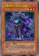 | 幻影骑士团 沾尘袍 | [怪兽|效果] 战士/暗 [★★★] 800/1000 「幻影骑士团 沾尘袍」的①②的效果1回合各能使用1次。 ①：这张卡在场上攻击表示存在的场合，以场上1只暗属性怪兽为对象才能发动。这张卡变成守备表示，作为对象的怪兽的攻击力·守备力直到对方回合结束时上升800。 ②：把墓地的这张卡除外才能发动。从卡组把「幻影骑士团 沾尘袍」以外的1张「幻影骑士团」卡加入手卡。 |
| 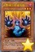 | 幻影骑士团 破手套 | [怪兽|效果] 战士/暗 [★★★] 1000/500 「幻影骑士团 破手套」的①②的效果1回合各能使用1次。 ①：场上的这张卡为素材作超量召唤的暗属性怪兽得到以下效果。 ●这次超量召唤成功的场合发动。这张卡的攻击力上升1000。 ②：把墓地的这张卡除外才能发动。从卡组把1张「幻影骑士团」卡或者「幻影」魔法·陷阱卡送去墓地。 |
| 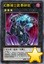 | 幻影骑士团 断碎剑 | [怪兽|效果|超量] 战士/暗 [★★★] 2000/1000 3星怪兽×2 ①：1回合1次，把这张卡1个超量素材取除，以自己以及对方场上的卡各1张为对象才能发动。那些卡破坏。 ②：超量召唤的这张卡被破坏的场合，以自己墓地2只相同等级的「幻影骑士团」怪兽为对象才能发动。那些怪兽特殊召唤。这个效果特殊召唤的怪兽的等级上升1星。这个效果的发动后，直到回合结束时自己不是暗属性怪兽不能特殊召唤。 |
| 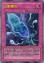 | 幻影雾剑 | [陷阱|永续] 以场上1只效果怪兽为对象才能把这张卡发动。「幻影雾剑」的②的效果1回合只能使用1次。 ①：只要这张卡在魔法与陷阱区域存在，作为对象的怪兽不能攻击，不会成为攻击对象，效果无效化。那只怪兽从场上离开时这张卡破坏。 ②：把墓地的这张卡除外，以自己墓地1只「幻影骑士团」怪兽为对象才能发动。那只怪兽特殊召唤。这个效果特殊召唤的怪兽从场上离开的场合除外。 |
| 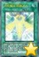 | 升阶魔法-削魂之力 | [魔法] ①：把基本分支付一半，以自己墓地1只「急袭猛禽」超量怪兽为对象才能发动。那只怪兽特殊召唤，比那只怪兽阶级高2阶的1只超量怪兽在作为对象的怪兽上面重叠当作超量召唤从额外卡组特殊召唤。 |
| 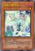 | 调律之魔术师 | [怪兽|效果|调整] 魔法师/暗 [★] 0/0 「调律之魔术师」的①的效果1回合只能使用1次。 ①：这张卡在手卡·墓地存在，自己的灵摆区域有2张「魔术师」卡存在的场合才能发动。这张卡特殊召唤。这个效果特殊召唤的这张卡从场上离开的场合除外。 ②：这张卡召唤·特殊召唤成功的场合发动。对方回复400基本分，那之后自己受到400伤害。 |
 | 刻剑之魔术师 | [怪兽|效果|灵摆] 魔法师/暗 [★★★] 1400/0 2/2 ←2 【灵摆】 2→ ①：只要这张卡在灵摆区域存在，1回合1次，自己场上的灵摆怪兽不会被对方的效果破坏。 【怪兽效果】 ①：只让手卡的这张卡灵摆召唤成功时才能发动。这张卡的攻击力变成原本攻击力的2倍。 ②：1回合1次，以场上1只怪兽为对象才能发动。那只怪兽和场上的这张卡直到下次的自己准备阶段除外。 |
| 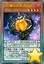 | 娱乐伙伴 琴键猴 | [怪兽|效果|灵摆] 兽/地 [★★★★★★] 1000/2400 1/1 ←1 【灵摆】 1→ 「娱乐伙伴 琴键猴」的②的灵摆效果1回合只能使用1次。 ①：另一边的自己的灵摆区域没有「娱乐伙伴」卡存在的场合，这张卡的灵摆刻度变成4。 ②：这张卡发动的回合的自己主要阶段才能发动。从卡组把1只4星以下的「娱乐伙伴」怪兽加入手卡。 【怪兽效果】 ①：把这张卡从手卡丢弃才能发动。手卡1只「娱乐伙伴」怪兽或者「异色眼」怪兽给对方观看。这个回合，那只怪兽以及自己手卡的同名怪兽的等级下降1星。 |
| 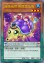 | 娱乐伙伴 鱼饵大头龟 | [怪兽|效果|灵摆] 爬虫类/水 [★★★] 800/1200 3/3 ←3 【灵摆】 3→ ①：1回合1次，自己主要阶段才能发动。手卡1只「娱乐伙伴」怪兽或者「异色眼」怪兽给对方观看。这个回合，那只怪兽以及自己手卡的同名怪兽的等级下降1星。 【怪兽效果】 ①：这张卡被战斗破坏时才能发动。把让这张卡破坏的怪兽破坏。 |
| 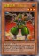 | 超重武者 心构-A | [怪兽|效果] 机械/地 [★★★] 100/2100 自己墓地有魔法·陷阱卡存在的场合，这张卡不能召唤·反转召唤。 ①：自己墓地没有魔法·陷阱卡存在，自己受到战斗伤害时才能发动。这张卡从手卡特殊召唤。这个效果特殊召唤的这张卡在这个回合不会被战斗·效果破坏。 |
| 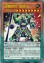 | 超重辉将 翡翠-E | [怪兽|效果|灵摆] 机械/地 [★★★★★★★★] 1800/2800 1/1 ←1 【灵摆】 1→ ①：自己不是「超重武者」怪兽不能灵摆召唤。这个效果不会被无效化。 ②：1回合1次，以自己场上1只「超重武者」怪兽为对象才能发动。那只怪兽的等级上升1星。 【怪兽效果】 这张卡在规则上也当作「超重武者」卡使用。这张卡可以把1只「超重武者」怪兽解放作上级召唤。 ①：这张卡召唤·特殊召唤成功时才能发动。这张卡的表示形式变更。 ②：这张卡可以用表侧守备表示的状态作出攻击。那个场合，这张卡用守备力当作攻击力使用进行伤害计算。 |
 | 超重辉将 珊瑚-5 | [怪兽|效果|灵摆] 机械/地 [★] 300/500 8/8 ←8 【灵摆】 8→ ①：自己墓地有魔法·陷阱卡存在的场合，这张卡的灵摆刻度变成4。 ②：1回合1次，自己的「超重武者」怪兽战斗破坏对方怪兽时才能发动。那只怪兽只再1次可以继续攻击。 【怪兽效果】 这张卡在规则上也当作「超重武者」卡使用。「超重辉将 珊瑚-5」的怪兽效果1回合只能使用1次。 ①：自己墓地没有魔法·陷阱卡存在的场合，把自己场上最多2只「超重武者」怪兽解放才能发动。自己从卡组抽出解放的数量。 |
 | 幻奏的歌姬 索萝 | [怪兽|效果] 天使/光 [★★★★] 1600/1000 ①：对方场上有怪兽存在，自己场上没有怪兽存在的场合，这张卡可以从手卡特殊召唤。 ②：这张卡被战斗破坏送去墓地时才能发动。从卡组把「幻奏的歌姬 索萝」以外的1只「幻奏」怪兽特殊召唤。 |
| 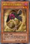 | 黑羽-沙尘之哈麦丹 | [怪兽|效果] 鸟兽/暗 [★★] 800/800 「黑羽-沙尘之哈麦丹」的①的方法的特殊召唤1回合只能有1次。 ①：自己场上有「黑羽-沙尘之哈麦丹」以外的「黑羽」怪兽存在的场合，这张卡可以从手卡特殊召唤。 ②：这张卡召唤·特殊召唤成功时，以这张卡以外的自己场上1只「黑羽」怪兽为对象才能发动。这张卡的等级上升那只怪兽的等级数值。 |
| 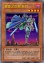 | 黄昏之忍者-新月 | [怪兽|效果] 战士/暗 [★★★★] 1500/100 「黄昏之忍者-新月」的②的效果1回合只能使用1次。 ①：只要这张卡在怪兽区域存在，对方不能把其他的「忍者」怪兽作为攻击对象，也不能作为效果的对象。 ②：这张卡被战斗或者对方的效果破坏送去墓地的场合才能发动。从卡组把「黄昏之忍者-新月」以外的1只「忍者」怪兽加入手卡。 |
 | 黄昏之忍者将军-月牙 | [怪兽|效果] 战士/暗 [★★★★★★★★] 2000/3000 这张卡可以把1只「忍者」怪兽解放作上级召唤。「黄昏之忍者将军-月牙」的效果1回合只能使用1次。 ①：这张卡在场上攻击表示存在的场合，以「黄昏之忍者将军-月牙」以外的自己墓地2只「忍者」怪兽为对象才能发动。这张卡变成守备表示，作为对象的怪兽特殊召唤。 |
| 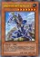 | 使破坏剑的高手-破坏之剑士 | [怪兽|效果] 战士/地 [★★★★★★★] 2600/2300 ①：这张卡的卡名只要在场上·墓地存在当作「破坏之剑士」使用。 ②：对方场上的怪兽被战斗·效果破坏送去墓地的场合，以破坏的那1只怪兽为对象才能发动。那只怪兽当作装备卡使用给这张卡装备。 ③：1回合1次，把这张卡装备的1张怪兽卡送去墓地才能发动。和送去墓地的那张怪兽卡相同种族的对方场上的怪兽全部破坏。 |
| 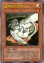 | 破坏剑士的伴龙 | [怪兽|效果|调整] 龙/光 [★] 400/300 「破坏剑士的伴龙」的②③的效果1回合只能有1次使用其中任意1个。 ①：这张卡召唤成功时才能发动。从卡组把「破坏剑士的伴龙」以外的1张「破坏剑」卡加入手卡。 ②：把这张卡解放才能发动。从自己的手卡·墓地选1只「破坏之剑士」特殊召唤。 ③：这张卡在墓地存在，自己场上有「破坏剑士」存在的场合，从手卡丢弃1张「破坏剑」卡才能发动。这张卡从墓地特殊召唤。 |
| 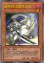 | 破坏剑-龙破坏之剑 | [怪兽|效果|调整] 龙/暗 [★] 400/300 「破坏剑-龙破坏之剑」的③的效果1回合只能使用1次。 ①：自己主要阶段以自己场上1只「破坏之剑士」为对象才能发动。从自己的手卡·场上把这只怪兽当作装备卡使用给那只自己怪兽装备。 ②：这张卡装备中的场合，对方不能从额外卡组把怪兽特殊召唤。 ③：这张卡装备中的场合才能发动。装备的这张卡特殊召唤。 |
| 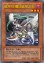 | 破坏剑-魔法破坏之剑 | [怪兽|效果] 魔法师/暗 [★★★] 1200/900 ①：自己主要阶段以自己场上1只「破坏之剑士」为对象才能发动。从自己的手卡·场上把这只怪兽当作装备卡使用给那只自己怪兽装备。 ②：这张卡装备中的场合，对方不能把墓地的怪兽的效果发动。 ③：把装备的这张卡送去墓地，以「破坏剑-魔法破坏之剑」以外的自己墓地1只「破坏剑」怪兽为对象才能发动。那只怪兽加入手卡。 |
| 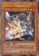 | 破坏剑-武器破坏之剑 | [怪兽|效果] 机械/暗 [★★★★] 1600/1200 ①：自己主要阶段以自己场上1只「破坏之剑士」为对象才能发动。从自己的手卡·场上把这只怪兽当作装备卡使用给那只自己怪兽装备。 ②：这张卡装备中的场合，对方场上的已是表侧表示存在的魔法·陷阱卡不能把效果发动。 ③：把装备的这张卡送去墓地才能发动。这张卡装备过的怪兽的攻击力直到回合结束时上升1000。 |
 | 雾动机龙·腕龙 | [怪兽|效果|灵摆] 机械/水 [★★★★★] 2000/800 6/6 ←6 【灵摆】 6→ ①：只在这张卡在灵摆区域存在才有1次，可以把以这张卡以外的自己场上的「雾动机龙」卡为对象发动的效果无效。那之后，这张卡破坏。 【怪兽效果】 ①：自己的怪兽区域没有「雾动机龙·腕龙」存在，场上的攻击力最高的怪兽在对方场上存在的场合，这张卡可以从手卡特殊召唤。 |
| 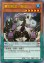 | 雾动机龙·角龙 | [怪兽|效果|灵摆] 机械/水 [★★★★★] 2100/400 3/3 ←3 【灵摆】 3→ ①：这张卡以外的自己场上的「雾动机龙」卡被战斗或者对方的效果破坏的场合，可以作为代替把这张卡破坏。 【怪兽效果】 ①：自己场上的怪兽只有「雾动机龙·角龙」以外的「雾动机龙」怪兽的场合，这张卡可以从手卡特殊召唤。 |
| 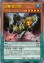 | 雾动机龙·霸王龙 | [怪兽|效果|灵摆] 机械/水 [★★★★★] 2400/2200 6/6 ←6 【灵摆】 6→ ①：只在这张卡在灵摆区域存在才有1次，可以把以这张卡以外的自己场上的「雾动机龙」卡为对象发动的效果无效。那之后，这张卡破坏。 【怪兽效果】 ①：这张卡进行攻击的伤害步骤结束时，可以把这张卡以外的自己场上1只「雾动机龙」怪兽解放，从以下效果选择1个发动。 ●这张卡向对方怪兽可以继续攻击，向守备表示怪兽攻击的场合，给与攻击力超过那个守备力的数值的战斗伤害。 ●选对方的手卡·场上1张卡回到持有者卡组（从手卡选的场合是随机选）。那之后，这张卡的攻击力上升100。 |
| 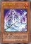 | 妖刀-不知火 | [怪兽|效果|调整] 不死/炎 [★★] 800/0 「妖刀－不知火」的效果1回合只能使用1次。 ①：这张卡在墓地存在的场合，以调整以外的自己墓地1只不死族怪兽为对象才能发动。那只怪兽和这张卡从墓地除外，把持有和那2只的等级合计相同等级的1只不死族同调怪兽从额外卡组特殊召唤。这个效果在这张卡送去墓地的回合不能发动。 |
| 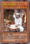 | 不知火的锻师 | [怪兽|效果] 不死/炎 [★★★★] 1000/0 「不知火的锻师」的①的效果1回合只能使用1次。 ①：场上的这张卡作为同调素材送去墓地的场合才能发动。从卡组把「不知火的锻师」以外的1张「不知火」卡加入手卡。 ②：这张卡被除外的场合才能发动。这个回合，自己的不死族怪兽不会被战斗破坏。 |
| 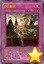 | 不知火的宫司 | [怪兽|效果] 不死/炎 [★★★★] 1500/0 「不知火的宫司」的②的效果1回合只能使用1次。 ①：这张卡召唤成功时才能发动。从自己的手卡·墓地选「不知火的宫司」以外的1只「不知火」怪兽特殊召唤。这个效果特殊召唤的怪兽从场上离开的场合除外。 ②：这张卡被除外的场合，以对方场上1张表侧表示的卡为对象才能发动。那张卡破坏。 |
| 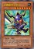 | 卡通破坏之剑士 | [怪兽|效果|卡通] 战士/地 [★★★★★★★] 2600/2300 ①：这张卡的攻击力上升对方的场上·墓地的龙族怪兽数量×500。 ②：这张卡在召唤·反转召唤·特殊召唤的回合不能攻击。 ③：自己场上有「卡通世界」存在，对方场上没有卡通怪兽存在的场合，这张卡可以直接攻击。 |
| 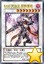 | 横条邪斑马 | [怪兽|效果|灵摆] 兽/暗 [★★] 0/2000 7/7 ←7 【灵摆】 7→ ①：这张卡发动的回合的自己主要阶段指定没有使用的怪兽区域或者魔法与陷阱区域1处才能发动。指定的区域在这张卡在灵摆区域存在期间不能使用。 【怪兽效果】 ①：这张卡召唤·特殊召唤成功的场合，指定没有使用的怪兽区域或者魔法与陷阱区域1处才能发动。指定的区域在这只怪兽表侧表示存在期间不能使用。 |
| 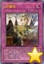 | 异色眼重力龙 | [怪兽|效果|仪式] 龙/地 [★★★★★★★] 2800/2500 「异色眼降临」降临。「异色眼重力龙」的①的效果1回合只能使用1次。 ①：这张卡特殊召唤成功时才能发动。对方场上的魔法·陷阱卡全部回到持有者手卡。对方不能对应这个效果的发动把魔法·陷阱·怪兽的效果发动。 ②：只要这张卡在怪兽区域存在，对方若不支付500基本分则不能把卡的效果发动。 |
| 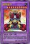 | 御用皇帝 | [怪兽|效果|融合] 战士/地 [★★★★★★★★★★] 3300/2500 战士族·地属性的同调怪兽×2 ①：这张卡或者原本持有者是对方的自己怪兽战斗破坏对方怪兽送去墓地时才能发动。破坏的那只怪兽在自己场上特殊召唤。 ②：对方把怪兽特殊召唤时，把自己场上1只战士族·地属性的同调怪兽解放才能发动。得到那些怪兽的控制权。 ③：表侧表示的这张卡从场上离开的场合发动。自己场上的全部怪兽的控制权回归原本持有者。 |
| 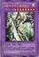 | 龙破坏的剑士-破坏之剑士 | [怪兽|效果|融合] 战士/光 [★★★★★★★★] 2800/2500 「破坏之剑士」＋龙族怪兽 这张卡不用融合召唤不能特殊召唤。 ①：这张卡不能直接攻击。 ②：这张卡的攻击力·守备力上升对方的场上·墓地的龙族怪兽数量×1000。 ③：只要这张卡在怪兽区域存在，对方场上的龙族怪兽变成守备表示，对方不能把龙族怪兽的效果发动。 ④：这张卡向守备表示怪兽攻击的场合，给与攻击力超过那个守备力的数值的战斗伤害。 |
| 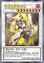 | 觉醒之魔导剑士 | [怪兽|效果|同调] 魔法师/暗 [★★★★★★★★] 2500/2000 调整＋调整以外的怪兽1只以上 「觉醒之魔导剑士」的①的效果1回合只能使用1次。 ①：「魔术师」灵摆怪兽作为素材让这张卡同调召唤成功的场合，以自己墓地1张魔法卡为对象才能发动。那张卡加入手卡。 ②：这张卡战斗破坏对方怪兽时才能发动。给与对方那只怪兽的原本攻击力数值的伤害。 |
| 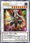 | 御用王 | [怪兽|效果|同调] 战士/地 [★★★★★★★★] 2800/2000 调整＋调整以外的同调怪兽1只以上 ①：这张卡向对方怪兽攻击的攻击宣言时发动。这张卡的攻击力直到伤害步骤结束时上升自己场上的战士族·地属性的同调怪兽数量×400。 ②：这张卡战斗破坏对方怪兽送去墓地时，可以从以下效果选择1个发动。 ●破坏的那只怪兽在自己场上特殊召唤。 ●选对方场上1只表侧表示怪兽得到控制权。 |
 | 破戒蛮龙-破坏龙 | [怪兽|效果|同调] 龙/暗 [★★★★★★★★] 1200/2800 调整＋调整以外的怪兽1只以上 ①：对方场上的怪兽只要这张卡表侧表示存在变成龙族。 ②：自己场上没有「破坏之剑士」怪兽存在的场合，1回合1次，以自己墓地1只「破坏之剑士」为对象才能发动。那只怪兽特殊召唤。 ③：对方回合1次，以自己场上1只「破坏之剑士」怪兽为对象才能发动。自己墓地1只「破坏剑」怪兽当作装备卡使用给作为对象的怪兽装备。 |
 | 刀神-不知火 | [怪兽|效果|同调] 不死/炎 [★★★★★★] 2500/0 不死族调整＋调整以外的不死族怪兽1只以上 自己对「刀神-不知火」1回合只能有1次特殊召唤。 ①：1回合1次，以除外的1只自己的不死族怪兽为对象才能发动。那只怪兽回到卡组，持有那个攻击力以下的攻击力的对方场上的怪兽全部变成守备表示。这个效果在对方回合也能发动。 ②：这张卡被除外的场合，以对方场上1只怪兽为对象才能发动。那只怪兽的攻击力下降500。 |
| 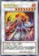 | 战神-不知火 | [怪兽|效果|同调] 不死/炎 [★★★★★★★★] 3000/0 不死族调整＋调整以外的不死族怪兽1只以上 自己对「战神-不知火」1回合只能有1次特殊召唤。 ①：这张卡特殊召唤成功的场合，把自己墓地1只不死族怪兽除外才能发动。这张卡的攻击力直到回合结束时上升除外的怪兽的原本攻击力数值。 ②：场上的这张卡被战斗·效果破坏送去墓地的场合，以除外的1只自己的守备力0的不死族怪兽为对象才能发动。那只怪兽回到墓地。 |
 | 高速疾行等级再现 | [魔法] ①：把自己墓地1只「疾行机人」怪兽除外，以自己场上1只同调怪兽为对象才能发动。那只怪兽直到回合结束时变成和除外的怪兽相同等级，攻击力上升除外的怪兽的等级×100。 |
| 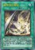 | 破坏剑士融合 | [魔法|速攻] 「破坏剑士融合」的①②的效果1回合各能使用1次。 ①：从自己手卡以及自己·对方场上把融合怪兽卡决定的融合素材怪兽送去墓地，把以「破坏之剑士」为融合素材的那1只融合怪兽从额外卡组融合召唤。 ②：这张卡在墓地存在的场合，把1张手卡送去墓地才能发动。墓地的这张卡加入手卡。 |
| 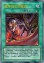 | 破坏剑士的宿命 | [魔法|速攻] 「破坏剑士的宿命」的①②的效果1回合各能使用1次。 ①：以对方墓地最多3只相同种族的怪兽为对象才能发动。那些怪兽除外，选自己场上1只「破坏之剑士」怪兽或者「破坏剑」怪兽，直到回合结束时那个攻击力·守备力上升除外的怪兽数量×500。 ②：这张卡在墓地存在的场合，从手卡丢弃1张「破坏剑」卡才能发动。墓地的这张卡加入手卡。 |
 | 龙呼相争 | [魔法|速攻] 「龙呼相争」在1回合只能发动1张。 ①：从卡组选1只「龙剑士」灵摆怪兽和1只「龙魔王」灵摆怪兽给对方观看，对方从那之中随机选1只。对方选的灵摆怪兽在自己的灵摆区域放置或特殊召唤。剩下的灵摆怪兽表侧表示加入自己的额外卡组。 |
| 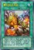 | 雾动机龙充能 | [魔法|永续] 「雾动机龙充能」在1回合只能发动1张。 ①：作为这张卡的发动时的效果处理，从卡组把1只「雾动机龙」怪兽加入手卡。 ②：1回合1次，「雾动机龙」卡从场上表侧表示加入自己的额外卡组的场合发动。那1张卡加入手卡。 |
| 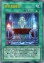 | 异色眼降临 | [魔法|仪式] 龙族的仪式怪兽的降临必需。「异色眼降临」在1回合只能发动1张。 ①：等级合计直到变成仪式召唤的怪兽的等级以上为止，把自己的手卡·场上的灵摆怪兽解放，从自己的手卡·墓地把1只龙族的仪式怪兽仪式召唤。对方场上有怪兽2只以上存在，自己场上没有怪兽存在的场合，自己的额外卡组的「异色眼」怪兽也能作为解放的代替而送去墓地。 |
| 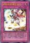 | 不知火流 燕之太刀 | [陷阱] 「不知火流 燕之太刀」在1回合只能发动1张。 ①：把自己场上1只不死族怪兽解放，以场上2张卡为对象才能发动。那些卡破坏。那之后，从卡组把1只「不知火」怪兽除外。 |
 | 龙之束缚 | [陷阱|永续] 以自己场上1只攻击力·守备力是2500以下的龙族怪兽为对象才能把这张卡发动。 ①：只要这张卡在魔法与陷阱区域存在，双方不能把作为对象的怪兽的原本攻击力以下的怪兽特殊召唤。 ②：作为对象的怪兽从场上离开时这张卡破坏。 |
| 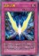 | 追赶之翼 | [陷阱|永续] 以自己场上1只同调怪兽为对象才能把这张卡发动。 ①：只要这张卡在魔法与陷阱区域存在，作为对象的怪兽不会被战斗以及对方的效果破坏。 ②：作为对象的怪兽和5星以上的对方怪兽进行战斗的伤害步骤开始时才能发动。那只对方怪兽破坏。作为对象的怪兽的攻击力直到回合结束时上升这个效果破坏的怪兽的原本攻击力数值。 ③：作为对象的怪兽从场上离开的场合这张卡破坏。 |
 | 抗拒苏生 | [陷阱] ①：对方怪兽的直接攻击宣言时才能发动。战斗阶段结束。那之后，可以从自己墓地选调整和同调怪兽各1只特殊召唤。这个效果特殊召唤的怪兽的效果无效化。 |
| 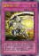 | 破坏剑一闪 | [陷阱] ①：自己场上有需以「破坏之剑士」为融合素材的融合怪兽存在的场合才能发动。对方场上的怪兽全部除外。 ②：以自己场上的「破坏之剑士」怪兽为对象的魔法·陷阱·怪兽的效果发动时，把墓地的这张卡除外才能发动。那个效果无效并破坏。 |
| 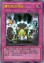 | 雾动机龙突进 | [陷阱] 「雾动机龙突进」在1回合只能发动1张。 ①：从卡组把1只「雾动机龙」怪兽特殊召唤。这个效果特殊召唤的怪兽不受其他卡的效果影响，结束阶段破坏。 |
| 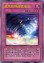 | 威风妖怪超级单体 | [陷阱|永续] ①：自己的灵摆区域有「威风妖怪」卡存在的场合，这张卡以外的「威风妖怪」卡的自己场上发动的效果的发动和效果不会被无效化。 ②：1回合1次，以自己墓地5张「威风妖怪」卡为对象才能发动。那5张卡加入卡组洗切。那之后，自己从卡组抽1张。 |
 | 邪神官 契伦·沙巴 | [怪兽|效果] 爬虫类/暗 [★★★★★★★★] 2500/0 「邪神官 契伦·沙巴」的②的效果1回合只能使用1次。 ①：自己手卡是5张以上的场合，这张卡可以不用解放作召唤。 ②：这张卡被战斗破坏送去墓地时才能发动。这张卡从墓地守备表示特殊召唤。这个效果特殊召唤的这张卡当作调整使用。 |
 | 银河蠕虫 | [怪兽|效果] 昆虫/光 [★★★] 1200/1000 ①：这张卡召唤成功时，自己场上没有这张卡以外的怪兽存在的场合才能发动。从卡组把1只3星以下的「银河」效果怪兽特殊召唤。这个效果特殊召唤的怪兽的效果无效化。 |
 | 超重剑圣 武藏-C | [怪兽|效果|同调] 机械/地 [★★★★★] 300/2300 调整＋调整以外的怪兽1只以上 这张卡在规则上也当作「超重武者」卡使用。 ①：这张卡同调召唤成功时，以自己墓地1只机械族怪兽为对象才能发动。那只怪兽加入手卡。自己墓地有魔法·陷阱卡存在的场合，这个回合自己不能把那只怪兽以及那些同名怪兽召唤·特殊召唤。 ②：这张卡可以用表侧守备表示的状态作出攻击。那个场合，这张卡用守备力当作攻击力使用进行伤害计算。 |
 | 古生物 皮卡虫 | [陷阱] ①：从手卡丢弃1张「古生物」卡。那之后，自己从卡组抽2张。 ②：场上的陷阱卡发动时，连锁那个发动这个效果才能从墓地发动。这张卡变成通常怪兽（水族·水·2星·攻1200/守0）在怪兽区域特殊召唤（不当作陷阱卡使用）。这个效果特殊召唤的这张卡不受怪兽的效果影响，从场上离开的场合除外。 |
 | 古生物 拟油栉虫 | [陷阱] ①：以场上1张魔法·陷阱卡为对象才能发动。那张卡破坏。 ②：场上的陷阱卡发动时，连锁那个发动这个效果才能从墓地发动。这张卡变成通常怪兽（水族·水·2星·攻1200/守0）在怪兽区域特殊召唤（不当作陷阱卡使用）。这个效果特殊召唤的这张卡不受怪兽的效果影响，从场上离开的场合除外。 |
 | 古生物 奇虾 | [怪兽|效果|超量] 水/水 [★★] 2400/0 2星怪兽×3只以上 ①：这张卡不受其他怪兽的效果影响。 ②：1回合1次，自己的魔法与陷阱区域的陷阱卡被送去墓地的场合才能发动。自己卡组最上面的卡翻开，那是陷阱卡的场合，加入手卡。不是的场合，送去墓地。 ③：这张卡有陷阱卡在作为超量素材的场合，1回合1次，把这张卡1个超量素材取除，以场上1张卡为对象才能发动。那张卡破坏。这个效果在对方回合也能发动。 |
 | 古生物 怪诞虫 | [陷阱] ①：以场上1只表侧表示怪兽为对象才能发动。那只怪兽的攻击力·守备力直到回合结束时变成一半。 ②：场上的陷阱卡发动时，连锁那个发动这个效果才能从墓地发动。这张卡变成通常怪兽（水族·水·2星·攻1200/守0）在怪兽区域特殊召唤（不当作陷阱卡使用）。这个效果特殊召唤的这张卡不受怪兽的效果影响，从场上离开的场合除外。 |
 | 古生物 加拿大虫 | [陷阱] ①：以对方场上1只表侧表示怪兽为对象才能发动。那只怪兽变成里侧守备表示。 ②：场上的陷阱卡发动时，连锁那个发动这个效果才能从墓地发动。这张卡变成通常怪兽（水族·水·2星·攻1200/守0）在怪兽区域特殊召唤（不当作陷阱卡使用）。这个效果特殊召唤的这张卡不受怪兽的效果影响，从场上离开的场合除外。 |
| 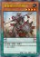 | 雷普提尔的侍骑兵 | [怪兽|效果|灵摆] 恐龙/地 [★★★★] 1800/1200 3/3 ←3 【灵摆】 3→ 【怪兽效果】 这张卡向对方灵摆怪兽以外的表侧表示怪兽攻击的伤害步骤开始时：可以把那只怪兽破坏。 |